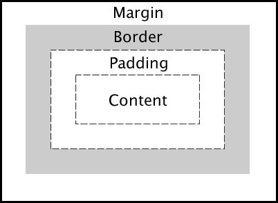
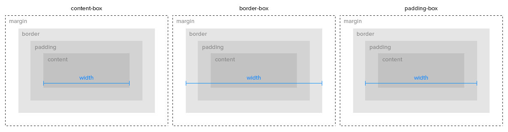
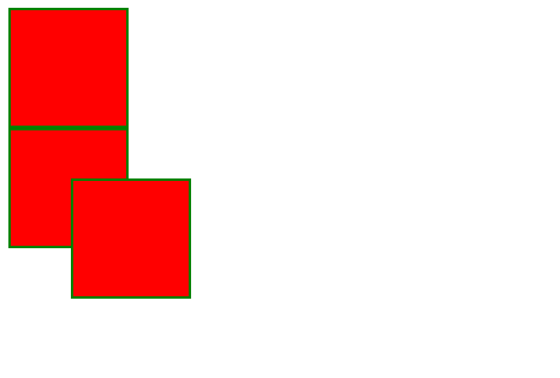

Capses i disposició
Cada element és una capsa: com es mesura, com es mou i com es reparteix l'espai.
Què sabràs fer en acabar
- Explicar les quatre capes del model de capsa.
- Calcular l'amplada real d'un element i fer servir
box-sizing. - Triar el valor de
positionadequat per a cada cas. - Distribuir elements amb Flexbox i amb Grid.
- Adaptar una pàgina al mòbil amb media queries.
El model de capsa
El navegador tracta cada element com una capsa rectangular amb quatre capes, de dins cap a fora:

| Capa | Propietat | Com és |
|---|---|---|
| Contingut | width, height | On hi ha el text o la imatge |
| Farciment | padding | Espai interior; agafa el fons de l'element |
| Vora | border | La línia; gruix, estil i color |
| Marge | margin | Espai exterior, transparent; pot ser negatiu |
Quant ocupa de debò
Per defecte (box-sizing: content-box) l'amplada només compta el contingut, i el farciment i la vora s'hi sumen. Amb border-box, l'amplada que escrius ja ho inclou tot menys el marge.
width: 200px; padding: 20px; border: 5px | Amplada visible |
|---|---|
content-box | 200 + 40 + 10 = 250 px |
border-box | 200 px |

Per això gairebé tots els projectes comencen amb aquesta regla:
*, *::before, *::after {
box-sizing: border-box;
}
Posicionar amb position
| Valor | Referència | Surt del flux? |
|---|---|---|
static | Cap: ignora top i left; és el valor per defecte | No |
relative | La seva posició normal | No: deixa el forat |
absolute | L'avantpassat posicionat més proper, o la pàgina | Sí |
fixed | La finestra; no es mou en fer scroll | Sí |
sticky | Relatiu fins a un llindar; després, fix | No |

La parella habitual és un pare amb relative i un fill amb absolute: el fill es col·loca respecte del pare, per exemple un text sobre una imatge.
Flexbox i Grid
Per repartir espai entre elements no cal position: hi ha dos sistemes pensats per a això.
| Flexbox | Grid | |
|---|---|---|
| Dimensions | Una: fila o columna | Dues: files i columnes |
| S'activa amb | display: flex | display: grid |
| Propietats clau | justify-content, align-items, flex-wrap, gap | grid-template-columns, grid-template-areas, gap |
| Ideal per | Menús, barres, targetes en fila | L'estructura de tota la pàgina |
Centrar i fer una graella
Centrar una capsa horitzontalment i verticalment dins de la pantalla:
.contenidor {
display: flex;
justify-content: center; /* eix horitzontal */
align-items: center; /* eix vertical */
min-height: 100vh;
}
Una graella de targetes que s'adapta sola a l'amplada:
.targetes {
display: grid;
grid-template-columns: repeat(auto-fit, minmax(200px, 1fr));
gap: 20px;
}
Una pàgina que es veu bé al mòbil
Més de la meitat de les visites arriben des del mòbil. Les media queries apliquen regles només a partir d'una amplada: es dissenya per a pantalla petita i s'amplia per a la gran (mobile first). Els temes dels gestors de continguts ja ho fan, i el CSS addicional ha de respectar-ho.
.pagina { display: block; }
@media (min-width: 768px) {
.pagina {
display: grid;
grid-template-columns: 220px 1fr;
}
}
Veure la capsa a l'inspector
A l'inspector del navegador, la pestanya Disposició dibuixa el model de capsa de l'element seleccionat amb els valors de cada capa. Els contenidors flex i grid porten una etiqueta al costat: si hi fas clic, el navegador en pinta les línies sobre la pàgina.
Criteris professionals
- Posa
box-sizing: border-boxa tot el document. - Grid per a l'estructura, Flexbox per als components.
- Deixa
position: absoluteper a detalls, no per maquetar la pàgina. - Prova sempre la pàgina a 375 px d'amplada.
- Deixa prou farciment als botons perquè es puguin tocar amb el dit.
Errors habituals
- Dues columnes al 50 % no hi caben
-
Causa Amb
content-box, el farciment i la vora se sumen al 50 %.Solució Fes servir
border-boxogapamb Grid. - L'element
absolutese'n va a la cantonada de la pàgina -
Causa Cap avantpassat té
positiondiferent destatic.Solució Posa
position: relativeal pare que ha de fer de referència. justify-contentno fa res-
Causa S'ha posat als fills, no al contenidor.
Solució Les propietats de Flexbox i Grid van al contenidor.
Resum
- Capsa: contingut,
padding,borderimargin. border-boxfa que l'amplada escrita sigui l'amplada real.relativees mou des del seu lloc;absolute, respecte del pare posicionat;fixed, respecte de la finestra.- Flexbox reparteix en una dimensió; Grid, en dues.
- Les media queries adapten la pàgina a cada pantalla.
Comprova el que has après
content-box, width: 300px, padding: 10px i border: 5px, quant fa d'ample la capsa visible?justify-content: center?Guia: repositori i GitHub Pages
Crear un repositori, clonar-lo per SSH i publicar-hi un web estàtic.
Què hi ha en aquesta guia
Documentació oficial: Repositoris a GitHub · Connectar-se per SSH · GitHub Pages
Crear el repositori i connectar-hi una clau SSH
-
Genera una clau SSH si encara no en tens cap a la màquina on treballes:
ssh-keygen -t ed25519 -C "el-teu-correu@exemple.cat" # Prem Retorn tres vegades per deixar el camí i la frase de pas per defecte -
Copia la clau pública i enganxa-la a GitHub, a Settings → SSH and GPG keys → New SSH key:
cat ~/.ssh/id_ed25519.pub
-
Comprova la connexió:
ssh -T git@github.com Hi username! You've successfully authenticated... -
Crea el repositori des de github.com, amb New repository: nom curt, públic, sense plantilla de
.gitignoreni llicència de moment. -
Clona'l per SSH a la carpeta on treballaràs:
git clone git@github.com:usuari/repositori.git cd repositori
Pujar el web i publicar-lo amb GitHub Pages
-
Afegeix els fitxers del web (com a mínim
index.html) dins de la carpeta clonada, amb les subcarpetes de CSS i imatges que calguin. -
Puja'ls al repositori:
git add . git commit -m "Primera versió del web" git push
-
Activa GitHub Pages: a la pàgina del repositori, Settings → Pages → Branch: main i desa. GitHub triga un o dos minuts a publicar-la.
-
Obre l'adreça publicada, que apareix a la mateixa pantalla un cop llesta:
https://usuari.github.io/repositori/.
Com saps que ha quedat bé
- L'adreça
https://usuari.github.io/repositori/mostra el mateix web que en local. - Els enllaços entre pàgines i les imatges funcionen publicats, no només en local.
git statusno mostra cap canvi pendent de pujar.
Rutes relatives i noms en minúscula
Enllaça sempre amb rutes relatives (contacte.html, css/estils.css), mai absolutes (/contacte.html): en local i a GitHub Pages la pàgina no viu a la mateixa arrel.
Fes servir noms de fitxer i de carpeta sempre en minúscula. El sistema de fitxers en local sol ignorar majúscules i minúscules, però els servidors de GitHub Pages no: un enllaç a Images/foto.jpg quan la carpeta es diu images falla només un cop publicat.
Si alguna cosa no va
- La pàgina publicada dona un error 404
-
Causa Encara no has activat GitHub Pages, o el fitxer principal no es diu
index.html.Solució Revisa Settings → Pages i el nom del fitxer a l'arrel del repositori.
- No surt una imatge a GitHub Pages però sí en local
-
Causa El nom de la carpeta o del fitxer no coincideix exactament en majúscules i minúscules amb l'enllaç de l'HTML.
Solució Fes-los coincidir: per exemple,
imagesi noImages. git pushdemana usuari i contrasenya, o el rebutja-
Causa El repositori s'ha clonat per HTTPS en lloc de per SSH, o la clau SSH no s'ha afegit a GitHub.
Solució Comprova l'adreça remota amb
git remote -v: ha de començar pergit@github.com:. Si no, torna a clonar per SSH.
Ficha ràpida
| Pas | Ordre o lloc |
|---|---|
| Generar i afegir la clau SSH | ssh-keygen i Settings → SSH and GPG keys |
| Clonar el repositori | git clone git@github.com:usuari/repositori.git |
| Pujar els canvis | git add . && git commit -m "…" && git push |
| Activar la publicació | Settings → Pages → Branch: main |
| Adreça publicada | https://usuari.github.io/repositori/ |
Targeta Pokémon
Donar estil a un HTML que no es pot tocar: només amb CSS.
Què has de saber abans de començar
Teories T1.2 (selectors i propietats) i TX.1 (model de capsa i Flexbox). Per al repositori, GX.1.
Faràs una targeta visualment atractiva a partir d'una estructura HTML fixa, escrivint només el fitxer styles.css amb selectors de classe.
Amb què treballaràs
- Visual Studio Code i un navegador.
- Un repositori nou a GitHub anomenat
pokemon, ambREADME.mdi llicència GPL v3, clonat per SSH. - La imatge bulbasaur.png, desada a la carpeta
images.
{kind=link}
L'HTML, que no es pot modificar
<!DOCTYPE html>
<html lang="ca">
<head>
<meta charset="UTF-8">
<meta name="viewport" content="width=device-width, initial-scale=1.0">
<title>Targeta de Pokémon</title>
<link rel="stylesheet" href="styles.css">
</head>
<body>
<div class="pokemon-card">
<img class="pokemon-image" src="images/bulbasaur.png"
alt="Imatge del Pokémon">
<div class="pokemon-info">
<h2 class="pokemon-name">Bulbasaur</h2>
<p class="pokemon-type plant">Planta</p>
<p class="pokemon-type poison">Verí</p>
<p class="pokemon-description">
Bulbasaur és un Pokémon de tipus Planta i Verí. És fàcil
distingir-lo per la llavor que té a l'esquena, que creix a
mesura que ell ho fa.
</p>
</div>
</div>
</body>
</html>
Què has de fer
| Classe | Estil que ha de tenir |
|---|---|
.pokemon-card | Fons gris clar, cantonades arrodonides, ombra, farciment, centrada horitzontalment i verticalment a la pantalla |
.pokemon-image | Amplada màxima, cantonades arrodonides i marge inferior |
.pokemon-info | Fons verd clar, cantonades arrodonides i farciment |
.pokemon-name | Tipus de lletra distintiu i color que contrasti |
.pokemon-type | Un color per tipus (.plant, .poison) i marge inferior |
.pokemon-description | Lletra més petita que el nom i color gris |
D'on has de treure cada cosa
| Què has de fer | On ho tens |
|---|---|
| Crear i clonar el repositori per SSH | Guia GX.1 |
| Selectors de classe i propietats de color i lletra | Teoria T1.2 |
| Farciment, vores i marges | Teoria TX.1, model de capsa |
| Centrar la targeta a la pantalla | Teoria TX.1, exemple de Flexbox |
| Publicar-la a GitHub Pages | Pas a pas del lliurament |
Dues classes al mateix element
class="pokemon-type plant" vol dir que l'element té dues classes. .pokemon-type dona l'estil comú a tots els tipus i .plant només el color propi. Així no es repeteix el mateix CSS.
Provar abans d'escriure
A l'inspector del navegador pots escriure propietats sobre .pokemon-card i veure'n l'efecte a l'instant. Quan t'agradi, copia-les a styles.css.
Com sabràs que ho has fet bé
index.htmlés idèntic a l'original.- La targeta queda centrada tant en pantalla gran com a 375 px d'amplada.
- Tots els estils fan servir selectors de classe.
- La pàgina publicada a GitHub Pages es veu igual que en local.
Si alguna cosa no va
- No surt la imatge a GitHub Pages però sí en local
-
Causa El nom de la carpeta o del fitxer no coincideix en majúscules i minúscules.
Solució GitHub Pages distingeix
Imagesd'images: fes-los coincidir. - La targeta no es centra verticalment
-
Causa El contenidor flex no té alçada.
Solució Dona
min-height: 100vhalbody.
Què has d'entregar
-
Publica els canvis des de la carpeta del repositori:
git add . git commit -m "Descripció dels canvis" git push
-
Activa GitHub Pages: Settings → Pages → Branch: main i desa.
-
Copia l'adreça publicada al camp Website de la secció About del repositori.
Entrega l'enllaç al repositori. Respon al README.md: quina propietat has fet servir per centrar la targeta i per què funciona?
Landing page
Una pàgina de producte amb menú, imatge destacada, botó d'acció i peu.
Què has de saber abans de començar
Teories T1.2 i TX.1, sobretot position i Flexbox. Per al repositori, GX.1.
Donaràs estil a una landing page amb una estructura HTML fixa, escrivint només styles.css.
Amb què treballaràs
- Un repositori nou a GitHub anomenat
landing-page, ambREADME.mdi llicència GPL v3. - La imatge product.png, desada a la carpeta
images.
{kind=link}
L'HTML, que no es pot modificar
<!DOCTYPE html>
<html lang="ca">
<head>
<meta charset="UTF-8">
<meta name="viewport" content="width=device-width, initial-scale=1.0">
<title>Landing Page</title>
<link rel="stylesheet" href="styles.css">
</head>
<body>
<header class="main-header">
<nav class="navbar">
<ul class="nav-list">
<li class="nav-item"><a href="#home" class="nav-link">Inici</a></li>
<li class="nav-item">
<a href="#features" class="nav-link">Característiques</a></li>
<li class="nav-item">
<a href="#contact" class="nav-link">Contacte</a></li>
</ul>
</nav>
</header>
<div class="landing-container">
<header class="header">
<h1 class="product-title">Producte Innovador</h1>
<p class="product-subtitle">La millor solució per a tu</p>
</header>
<section class="hero-section">
<img class="hero-image" src="images/product.png"
alt="Imatge del producte">
<p class="hero-text">Descobreix els beneficis d'aquest producte!</p>
</section>
<section class="description-section">
<p class="product-description">
Descobreix el nostre producte innovador, dissenyat per millorar
la teva vida diària. Amb tecnologia avançada i materials de
primera qualitat, aquest producte és perfecte per a tothom.
</p>
</section>
<footer class="footer">
<a href="#" class="cta-button">Compra ara</a>
</footer>
</div>
<footer class="main-footer">
<p class="footer-text">© 2026 Producte Innovador.</p>
<ul class="footer-links">
<li><a href="#privacy" class="footer-link">Privacitat</a></li>
<li><a href="#terms" class="footer-link">Termes</a></li>
<li><a href="#contact" class="footer-link">Contacte</a></li>
</ul>
</footer>
</body>
</html>
Què has de fer
| Classe | Estil que ha de tenir |
|---|---|
.navbar | Fons fosc, farciment, enllaços en una sola línia, en blanc, amb canvi de color en passar-hi el ratolí |
.landing-container | Fons suau, contingut centrat i farciment general |
.header i .product-subtitle | Títol amb lletra distintiva; subtítol més petit i gris |
.hero-image | Amplada màxima, cantonades arrodonides i marge inferior |
.hero-text | Posat damunt de la imatge, amb fons negre semitransparent, text blanc i farciment |
.product-description | Lletra més petita, gris i marge inferior |
.cta-button | Fons de color viu, text blanc, cantonades arrodonides i canvi de color amb el ratolí |
.main-footer | Fons fosc, farciment, text i enllaços centrats en blanc, amb canvi de color amb el ratolí |
D'on has de treure cada cosa
| Què has de fer | On ho tens |
|---|---|
| Menú en una línia | Teoria T1.2, bloc i en línia; o Flexbox a TX.1 |
| Canvi de color amb el ratolí | Teoria T1.2, exemple del menú (:hover) |
| Text damunt de la imatge | Teoria TX.1, parella relative i absolute |
| Fons semitransparent | Color amb canal alfa: rgba(0, 0, 0, 0.6) |
| Repositori i GitHub Pages | Guia GX.1 |
Qui fa de referència
Un element amb position: absolute es col·loca respecte de l'avantpassat posicionat més proper. Si no n'hi ha cap, ho fa respecte de la pàgina. Pensa quin element de l'HTML ha de fer de pare del text damunt de la imatge.
Llistes sense punts
Les ul porten pics i marge a l'esquerra de sèrie. A l'inspector veuràs que venen de l'estil del navegador: list-style, padding i margin les treuen.
Com sabràs que ho has fet bé
index.htmlés idèntic a l'original.- El text de la imatge queda damunt de la imatge també a 375 px d'amplada.
- El menú, el botó i els enllaços del peu canvien de color amb el ratolí.
- La pàgina es veu publicada a GitHub Pages.
Si alguna cosa no va
- El text de la imatge se'n va a dalt de tot de la pàgina
-
Causa Cap element pare té
position.Solució Posa
position: relativea.hero-section. - Els enllaços del menú surten un sota l'altre
-
Causa Els
lisón elements de bloc.Solució Posa
display: flexa.nav-list.
Què has d'entregar
-
Publica els canvis des de la carpeta del repositori:
git add . git commit -m "Descripció dels canvis" git push
-
Activa GitHub Pages: Settings → Pages → Branch: main i desa.
-
Copia l'adreça publicada al camp Website de la secció About del repositori.
Entrega l'enllaç al repositori. Respon al README.md: quin element fa de referència del text damunt de la imatge i què passaria si li treguessis el position?
Zoo interactiu
Els mateixos animals en graella o en fila: Grid i Flexbox cara a cara.
Què has de saber abans de començar
Teoria TX.1, Flexbox i Grid. Per al repositori, GX.1.
Faràs un zoo virtual on els animals es distribueixen amb Grid, i un botó els passa a Flexbox per comparar com reparteix l'espai cada sistema.
Amb què treballaràs
- Un repositori nou a GitHub anomenat
zoo. - Almenys sis imatges d'animals amb llicència lliure, per exemple de Wikimedia Commons, a la carpeta
images.
Punt de partida
Estructura HTML; afegeix-hi animals fins a sis com a mínim:
<header>
<h1>Benvingut al Zoo Interactiu!</h1>
<p>Explora els nostres animals i canvia com es mostren!</p>
</header>
<main>
<section class="zoo-grid">
<div class="animal">
<img src="images/lleo.jpg" alt="Lleó">
<h2>Lleó</h2>
<p>El rei de la sabana.</p>
</div>
<!-- més animals aquí -->
</section>
</main>
<footer>
<button id="toggle-layout">Canvia a Flex</button>
</footer>
<script src="script.js"></script>
El botó alterna una classe; tot el canvi d'aspecte ha d'estar al CSS:
// script.js
const zoo = document.querySelector('.zoo-grid');
const boto = document.getElementById('toggle-layout');
boto.addEventListener('click', () => {
zoo.classList.toggle('mode-flex');
boto.textContent = zoo.classList.contains('mode-flex')
? 'Canvia a Grid' : 'Canvia a Flex';
});
Què has de fer
- Distribueix els animals amb
display: gridi columnes que s'adaptin soles a l'amplada. - Escriu la regla
.zoo-grid.mode-flexambdisplay: flex,flex-wrapi centrat. - Dona a cada targeta ombra, cantonades arrodonides i una imatge retallada a la mateixa alçada amb
object-fit. - Afegeix una animació en passar-hi el ratolí:
transform: scale(1.05)ambtransition. - Opcional: en clicar un animal, mostra més informació.
D'on has de treure cada cosa
El JavaScript no dona estil
La versió anterior d'aquest exercici canviava l'estil des del JavaScript. Ara el botó només posa o treu una classe: el disseny continua sencer al CSS, que és on es busca quan alguna cosa no es veu bé.
Veure la graella
A l'inspector, al costat de .zoo-grid surt l'etiqueta grid o flex. Si hi fas clic, el navegador dibuixa les columnes i els espais: fes-ho en els dos modes i compara.
Com sabràs que ho has fet bé
- En mode Grid totes les targetes d'una fila fan la mateixa amplada.
- En mode Flex salten de línia i queden centrades.
- A 375 px es veu una sola columna sense desbordament horitzontal.
- Les imatges tenen totes la mateixa alçada sense deformar-se.
Si alguna cosa no va
- El botó no fa res
-
Causa
script.jsno es carrega o s'executa abans que existeixin els elements.Solució Mira la consola (F12) i deixa el
<script>al final delbody. - Les imatges surten deformades
-
Causa Tenen amplada i alçada fixes sense retallar.
Solució Afegeix
object-fit: cover.
Què has d'entregar
-
Publica els canvis des de la carpeta del repositori:
git add . git commit -m "Descripció dels canvis" git push
-
Activa GitHub Pages: Settings → Pages → Branch: main i desa.
-
Copia l'adreça publicada al camp Website de la secció About del repositori.
Entrega l'enllaç. Respon al README.md: en quin cas triaries Grid i en quin Flexbox? Posa-hi una captura de cada mode.
Pràctica: web HTML5
Un web propi de tres pàgines, semàntic, animat i adaptat al mòbil.
Què has de saber abans de començar
Teories T1.2 i TX.1 senceres i les activitats AX.1 a AX.3.
Faràs un projecte complet només amb HTML5 i CSS, sobre un tema que triïs, i en documentaràs les decisions de disseny.
Amb què treballaràs
- Un repositori nou a GitHub amb GitHub Pages activat.
- Carpetes separades per a CSS i imatges.
- Tema lliure: bloc personal, web d'empresa, catàleg de productes…
Què has de fer
| Apartat | Requisits | Punts |
|---|---|---|
| Layout | Esquema dibuixat al README. Etiquetes semàntiques (header, nav, main, section, article, footer). Sense <br> ni marcs. | 2,5 |
| Navegació | Dins de <nav>, fixa o enganxosa, amb efecte a :hover i adaptació al mòbil. | 1,5 |
| Continguts i estil | Tres pàgines com a mínim, amb un sol styles.css extern i estils per a lletra, colors, marges, imatges i enllaços. | 2 |
| Visualització i animació | Un efecte (carrusel, paral·laxi o transicions) i animacions amb @keyframes, transition o transform. | 1,5 |
| Disseny adaptable | Media queries per a pantalla petita, mitjana i gran. | 1 |
| Codi net | Indentació, comentaris on calgui i fitxers ordenats. HTML sense errors al validador del W3C. | 1,5 |
Extres valorats: tipus de lletra propis, icones SVG, formulari de contacte i multimèdia.
D'on has de treure cada cosa
Primer el dibuix
Dibuixa el layout en paper abans d'escriure codi: quines zones hi ha, com es col·loquen en pantalla gran i com s'apilen al mòbil. Amb el dibuix fet, les grid-template-areas gairebé s'escriuen soles.
Provar-ho com un mòbil
A Firefox, Ctrl+Maj+M obre la vista adaptable: tria un mòbil de 375 px i recorre totes les pàgines. Si apareix barra de desplaçament horitzontal, alguna cosa té una amplada fixa massa gran.
Com sabràs que ho has fet bé
- El validador del W3C no dona errors a cap pàgina.
- Les tres pàgines comparteixen el mateix
styles.css. - A 375 px no hi ha desplaçament horitzontal i el menú es pot fer servir.
- El web es veu publicat a GitHub Pages.
Si alguna cosa no va
- Les media queries no s'apliquen al mòbil
-
Causa Falta la metaetiqueta
viewport.Solució Afegeix-la al
headde totes les pàgines. - Els enllaços entre pàgines funcionen en local però no a GitHub Pages
-
Causa Rutes absolutes que comencen per
/.Solució Fes servir rutes relatives:
contacte.html.
Què has d'entregar
L'enllaç al repositori amb GitHub Pages activat. El README.md ha de tenir: descripció i tema, esquema del layout, decisions d'estil i propietats CSS usades, efectes i animacions, com has fet el disseny adaptable i captures del resultat.
Respon-hi també: quina part del teu CSS canviaries per adaptar aquest disseny a un tema de WordPress amb el CSS addicional?
Com es qualifica
Aquesta pràctica és una de les dues principals del RAX i és el 30 % de la seva nota. Cada apartat es puntua amb les evidències del README i el resultat publicat: la puntuació sencera si funciona, la meitat si funciona amb mancances i zero si no es pot demostrar.
Pràctica: botigues virtuals
Dues plataformes de comerç electrònic, la mateixa botiga i una comparació honesta.
Què has de saber abans de començar
Teories T1.3 i T1.5. Les guies G1.2 i G1.3 et serveixen per a qualsevol aplicació PHP.
Instal·laràs almenys dues plataformes de botiga, les configuraràs amb el mateix catàleg i compararàs quina és més fàcil d'instal·lar, de fer servir i de mantenir.
Amb què treballaràs
- Una màquina nova a IsardVDI amb la pila LAMP, i un host virtual i una base de dades per botiga.
- Plataformes a triar: WooCommerce (sobre WordPress), PrestaShop, OpenCart, CubeCart o Zen Cart.
Què has de fer a cada botiga
| Requisit | Detall |
|---|---|
| Aparença | Canviar el tema i personalitzar colors, tipus de lletra o disposició |
| Categories | Tres categories principals |
| Productes | Tres per categoria, amb nom, descripció de dues o tres frases i preu |
| Divisa | Una divisa configurada que es vegi bé a tots els preus |
| Idiomes | Dos idiomes com a mínim, amb nom i descripció de productes traduïts |
| Clients | Registre d'usuaris i subscripció al butlletí |
| Usabilitat | Qualsevol producte a tres clics o menys des de la portada |
D'on has de treure cada cosa
Requeriments abans d'instal·lar
Cada plataforma demana unes versions concretes de PHP i unes extensions. Mira-les a la documentació abans de començar: Ubuntu 26.04 porta PHP 8.5, i una plataforma que encara no el suporti fallarà a mitja instal·lació. Anota-ho a la comparació.
Comptar clics
Demana a un company que trobi un producte concret a la teva botiga sense ajuda i compta els clics. És la manera real de comprovar la regla dels tres clics.
Com sabràs que ho has fet bé
- Les dues botigues tenen 3 categories i 9 productes amb preu a la divisa triada.
- Un client nou es pot registrar i subscriure al butlletí.
- El canvi d'idioma tradueix nom i descripció dels productes.
- Cada producte és a tres clics o menys de la portada.
Si alguna cosa no va
- L'instal·lador diu que falta una extensió de PHP
-
Causa La plataforma en demana alguna que no porta la pila bàsica.
Solució Instal·la el paquet
php-…que falti i reinicia Apache. - Les dues botigues es barregen
-
Causa Comparteixen host virtual o base de dades.
Solució Una carpeta, un host virtual i una base de dades per botiga.
Què has d'entregar
Demostració en directe de les botigues, explicant on és cada funció i quines dificultats has resolt.
Un repositori públic a GitHub amb tot a README.md (sense PDF): plataformes amb versió i entorn, captures de cada requisit i una reflexió comparativa de 150 paraules com a mínim: quina és més intuïtiva i per què, quines dificultats has trobat i si compleixen la regla dels tres clics.
Per pujar nota: una tercera plataforma i una taula comparativa de facilitat d'instal·lació, personalització, escalabilitat i extensions.
Com es qualifica
Aquesta pràctica és una de les dues principals del RAX i és el 30 % de la seva nota. Cada apartat es puntua a la demostració i amb les evidències del README: la puntuació sencera si funciona, la meitat si funciona amb mancances i zero si no es pot demostrar.
| Apartat | Punts |
|---|---|
| Dues plataformes instal·lades amb els requeriments comprovats | 2 |
| Aparença personalitzada a cada botiga | 1,5 |
| Catàleg: categories, productes i divisa | 2 |
| Botiga en dos idiomes amb productes traduïts | 1 |
| Registre de clients i subscripció al butlletí | 1 |
| Proves de funcionament i regla dels tres clics | 1 |
| Comparació raonada de requeriments, ús i manteniment | 1,5 |
| Total | 10 |